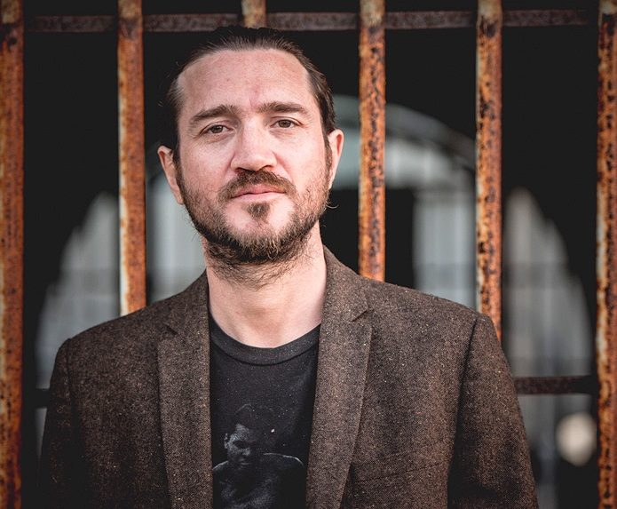
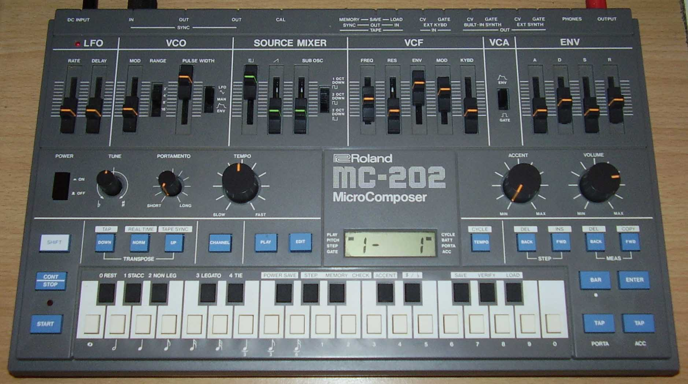

Były gitarzysta RHCP John Frusciante (AKA Trickfinger) nie jest zainteresowany występami. Człowiek, który urzekał tłumy na stadionach swoją grą, dziś bez przerwy tnie sample w swoim studio w Los Angeles, mając za towarzystwo jedynie koty i stertę syntezatorów. Nie tworzy już muzyki z myślą o jej wydawaniu, nie chciał też wydawać swojej najnowszej płyty, acid housowego LP, który ukazał się w kwietniu nakładem sublabelu wytwórni Absurd – Acid Test.
Informacja o tym, że gitarzysta Peppersów tworzy muzykę taneczną mogła wywołać zdziwienie wielu purystów. W późnych latach 80. i we wczesnych 90., gdy rave kiełkował w w LA, Frusciante dołączył do zespołu, nagrał z nim „Mother`s Milk” oraz „Blood Sugar Sex Magik” i porzucił grupę po raz pierwszy. Potem miało miejsce jego dobrze udokumentowane pogrążenie się w heroinowym uzależnieniu. Ale nikt kto uważnie śledzi ostatnie solowe wydawnictwa Fru nie powinien się zdziwić. W czasie gdy porzucił nałóg i ponownie dołączył do zespołu, by wydać klasyczne już „Californication”, odkrył synthpop i jungle, a podczas swojej ostatniej trasy 8 lat temu, zabijał nudę między występami nauką gry na Rolandzie TB-303. Efektem był longplay Trickfinger, którego granie na żywo wymaga użycia nawet 15 instrumentów jednocześnie. Nagrany w domowym studio jako bożonarodzeniowy prezent dla przyjaciół Johna, przypadkowo trafił w ręce Oliviera Bristowa z Acid Test.
Frusciante od tamtej pory zdążył wyprodukować hip-hopowe płyty Black Knights, współpracować z Venetian Snares pod szyldem Speed Dealers Moms i zagrać na nowym albumie Duran Duran, ale sprzęt i cyfrowe przetwarzanie dźwięku pozostają jego główną fascynacją. W niedawnej rozmowie telefonicznej opowiedział nam o płytach, które „nawróciły” go na muzykę taneczną.
Właśnie wydałeś płytę w acidowym sublabelu Absurd Recrds, co w twoim przypadku jest raczej zmianą obranego kierunku. Czy byłeś związany z ruchem rave, wtedy gdy się rozwijał?
Nie lubiłem wtedy tej muzyki. Zanim dołączyłem do RHCP, zespół zazwyczaj opowiadał pierdoły o automatach perkusyjnych w wywiadach – porównywali ich do Beastie Boys, bo byli biali i wiele z ich bitów wtedy było zbliżonych do jungle. Grali bardzo szybki funk, przypominający sample soulowe i funkowe o tempie podkręcanym przez producentów muzyki jungle. Słyszałem bity jungle w mojej głowie na długo przed tym, gdy ten rodzaj muzyki został wymyślony, to logiczne rozwinięcie „Fire” Jimiego Hendrixa, bębnów i temu podobnych. Ale w latach 90. przebywałem w tak odmiennej rzeczywistości, że nie miałem żadnego pojęcia o kulturze rave.
Racja. To były w ogóle dziwne czasy.
Tak, a ja byłem przez większość tej dekady narkomanem. Nie zdawałem sobie sprawy z tego, co dzieje się poza moim domem, a ta narkotykowa kultura w której żyłem niewiele miała wspólnego z ecstasy. Kiedy przestałem brać narkotyki, zacząłem chodzić do klubów jungle i poznawać ludzi, którzy organizowali rave`y. Ale w sumie ominęła mnie większość lat 90.
Pamiętam, że słyszałam Cię opowiadającego o Twoich pierwszych kontaktach z rave i uczuciu, że wszyscy dookoła są zjednoczeni i mają odlot na ecstasy.

Tak, mogłeś to poczuć od razu słuchając płyt. Nie musiałeś chodzić do klubów, żeby wyobrazić sobie, jak to wyglądało. To było podobne do tego, czym był dla mnie punk, gdy byłem małym dzieckiem. Miałem 10 czy 11 lat i byłem za mały, by chodzić na koncerty, a naprawdę tego chciałem. W tamtych czasach w LA, przemoc była na porządku dziennym na punkowych imprezach i to wydawało mi się atrakcyjne. Nie mogłem w tym uczestniczyć, więc tylko słuchałem płyt i wyobrażałem sobie atmosferę towarzyszącą tej muzyce. Coś podobnego czuję, gdy słucham starych płyt rave z lat 90. Zapominamy jak znacząca częścią muzyki jest to, co nasze umysły są w stanie do niej dodać. Szczególny sposób w jaki ludzki mózg tworzy czy słyszy muzykę to połowa tego, czym muzyka jest. Muzyka sama w sobie nie jest w pełni wartościowa.
Może nie doceniamy wyobraźni?
To, co wyobraźnia dokłada do doświadczenia słuchania muzyki jest ogromnie istotne. Punk, rave i pionierzy rock and rolla: te nurty muzyczne są bardzo istotne, bo były czystą energią. Atmosfera towarzysząca muzyce była oczywista. Według mnie wiele muzyki elektronicznej, która jest nagrywana obecnie nie wygląda na tworzoną dla ludzkiej wyobraźni. Nie słyszę tam atmosfery. Słyszę tylko dużo kompresji. To fatalny kierunek. Lubię, gdy muzyka ma wokół siebie tajemnicę. Ciągle są na świecie indywidualności, które tworzą muzykę mającą klimat i wyobraźnię, a mimo to pozostają nieznane i ukryte. Mam nadzieję, że pewnego dnia nasza branża odkryje jak promować tego rodzaju twórczość zamiast muzyki, która wwierca się w nasze głowy i zostaje „zapromowana” na śmierć. To było naprawdę wspaniałe dla mnie jako dla dzieciaka słuchającego punk rocka nie mieć zielonego pojęcia kim byli wokaliści Black Flag i the Germs. Wiedziałem tylko, że żyją w tym samym mieście i oddychają tym samym powietrzem – to wystarczało by rozpalić moją wyobraźnię.
Opowiedz mi o płytach które wyciągnąłeś gdy zaczęliśmy rozmawiać o rave.
Jedna jest wydana przez wytwórnię Suburban Bass. Jej autorem jest Johnny Jungle, a tytuły utworów to “Killa Sound” i “What’s On Ya Mind.” Została wydana w 1995 roku. To jedna z tych niesamowicie prostych płyt. Mogę ją puszczać na okrągło i nigdy się nie znudzę. Ogólnie jej produkcja jest bardzo prosta: pomysłowe, innowacyjne break beat`y, niski bas i sample. Prostota i przestrzenność tej muzyki, każdy najmniejszy detal sampli, naprawdę delikatne dźwięki, wszystko co słyszę jest zachwycające. Nie dostrzegłbyś takich szczegółów, gdyby była upchana syntezatorami. To po prostu płyta, którą nigdy się nie znudzę.
Inna która wyciągnąłem to EP „Energy Trance” Komakino. Ten zespół to kilku facetów z Niemiec, ale nie ma o nich zbyt wielu informacji. Zobaczyłem tę płytę w sklepie muzycznym jednego dnia i kupiłem, bo okładka była fajna, a zespół nazywał się tak jak jedna z piosenek Joy Division. Ta muzyka brzmi monumentalnie. Goście nie mieli z tego co mi się wydaje zbyt wiele 909, 808 i 303, syntezatorów Alpha Juno i komputerów. To przeciwieństwo Appex Twin i Venetian Snares: nie jest wyrafinowana. Jest wręcz prymitywna. Ale mają wspaniałe wyczucie melodii, podstawowe wyczucie harmonii i zachodnich gam, modulację, zmiany tonacji i takie rzeczy. Nie znalazłem wiele techno i trance, które uwielbiałbym tak, jak ich muzykę. Kupiłem wszystko co kiedykolwiek nagrali i zremisowali. W pewnym momencie przestali produkować i kilka ich ostatnich 12„ nie jest już tak dobrych, ale prawie wszystko co nagrali ma szczególne miejsce w moim sercu.
Ostatnia to płyta artysty Pure White, który nagrywał także jako Orca i DJ Crystal. Jest zatytułowana „4AM”. Znów nie wiem o nim nic i znów jest to płyta której słuchanie nigdy mnie nie znudzi. Powiedziałem kiedyś mojemu przyjacielowi, że gdybym zmarł i poszedł do nieba i gdyby leciała tam tylko ta piosenka, byłbym szczęśliwy. To jungle, więc bębny są pocięte w naprawdę sprytny sposób. Nie wiem skąd jest samplowany refren, ale jest świetnie wkomponowany w całość. Jest znakomity kontrast między twardością bitu i pięknem refrenu, ale ten utwór nie brzmi popowo – jest naprawdę brudny, szorstki i zniekształcony. W muzyce elektronicznej, ludzie zwracali się w przeciwnym kierunku. Wszyscy chcieli mieć nieskazitelny dźwięk z dużą ilością „góry”, naprawdę czysty – jestem szczęśliwy gdy słyszę ludzi którzy nie starają się by wszystko brzmiało perfekcyjnie.
Jak znalazłeś te płyty?
Spędziłem mnóstwo czasu w podróżach i na przeglądaniu tego, co sklepy muzyczne mają w swoich elektronicznych sekcjach. Pomaga też posiadanie przyjaciół, którzy wyrośli na takiej muzyce. Aaron Funk (AKA Venetian Snares) dał mi miliony milionów MP3 rave z lat 90. i przez długi czas te MP3 były główną rzeczą, której słuchałem. To było jak radiostacja, gdzie zawsze mogę zobaczyć nazwisko artysty i tytuł utworu i zawsze mogę znaleźć winylową wersję na Discogs. Kiedy chodziłem tańczyć do klubów jungle, nie miałem przyjaciół którzy byli DJ-ami lub producentami, więc bawiłem się, ale nie wiedziałem czego słucham. Nie chciałem też zbierać muzyki do której chodzę tańczyć, bo nie wyobrażałem sobie jej poza klubami.
Miałam podobne doświadczenia, gdy zaczynałam słuchać muzyki elektronicznej. Nie wiedziałam czego słucham, liczył się kontekst.
Tak, jedna z najpiękniejszych rzeczy w słuchaniu tej muzyki był rodzaj przestrzeni w której ona powinna być słuchana: pomieszczenie, gdzie tańczą ludzie. Gdy zaprzyjaźniłem się z Aaronem w 2008 roku odkryłem dzięki niemu znacznie więcej ciekawych rzeczy niż chodząc do sklepów muzycznych. Ludzie ze sklepów muzycznych są snobami. Przekonałem się o tym. Wcale nie chcą ci pomóc. Zawsze w mojej kolekcji były pewne płyty, które były inne niż wszystkie i myślałem sobie” Boże , chciałbym więcej takiej muzyki.” To czułem, gdy po raz pierwszy posłuchałem 303. I zawsze uwielbiałem The Prodigy odkąd znalazłem ich wczesne nagrania w 1999 roku, ale nie wiedziałem, że są tony takiej muzyki i że są to świetne płyty do słuchania w domu. Możesz je puszczać w kółko – jak płyty Beatlesów.
Pamiętasz dokąd wychodziłeś w Los Angeles?
Chodziłem do dzielnicy Silver Lake, do Concrete Jungle, był tam też klub o nazwie Spaceland. Teraz Silver Lake to hipsterska dzielnica, wtedy mieszkali tam Meksykanie. Chodziłem tam co czwartek. Było kilka innych miejsc w mieście, ale to było moje ulubione.
Co się z nim stało?
Zaczęli łączyć jungle z hip-hopem i myślę że to było siłowe. Nie interesowało mnie tańczenie hip –hopu, a ludzie którzy zaczęli przychodzić wariowali na parkiecie. Kiedy ludzie tańczą jungle, mają własne miejsce i nie wchodzą sobie w drogę, nie robią nic wymyślnego. Kiedy ludzie tańczą hip-hop albo robią to fajnie, albo się popisują. Więc przestałem tam chodzić, a wkrótce potem klub zamknięto. Wpadłem ostatnio na jednego z DJ-ów z tamtego klubu na koncercie Black Knights. Zapytał mnie dlaczego przestałem tam przychodzić i odpowiedziałem mu, że to dlatego, że wprowadzili hip-hop. Zdziwił się „Nie lubisz hip-hopu?” a ja odpowiedziałem „Sądzę , że było tam wielu ludzi, którzy go nie lubili.”
Więc jak to się stało że zacząłeś współpracować z hip-hopową grupą?
To był w pełni świadomy wybór. Przez około 5 lat, zaczynając od acidowych rzeczy takich jak płyta „Trickfinger” aż do około 2012 roku, nie chciałem robić muzyki w żadnym konkretnym stylu. Moim celem było robienie muzyki bardziej abstrakcyjnej, eksperymentalnej i nauczenie się czegoś w procesie jej tworzenia. Zawsze chciałem stawiać sobie wyzwania i robić coś, czego przedtem nie robiłem. Przypadkowo wpakowałem się w robienie muzyki o której myślałem jako o kolejnej formie progresywnego rocka, tylko zamiast łączyć klasykę, jazz i rock, łączyłem jungle, synthpop i to co można by nazwać IDM (Intelligent Dance Music – przyp. tłum.).
Miałam zamiar zapytać Cię czy kiedykolwiek próbowałeś tworzyć muzykę jungle…
Bębny w stylu jungle są na moich dwóch płytach: Enclosure i PBX Funicular Intaglio Zone. Obie mają też sporo breakbeatów, ale są tam też gitary i syntetyzatory. Próbowałem stworzyć moją własną wersję tego, jak Black Sabbath lub Depeche Mode brzmiałoby z bębnami jungle. Przyspieszenie było wielkim wyzwaniem. Mniej więcej wtedy, gdy tworzyłem acid house, zaprogramowałem taki beat jungle na moim Machinedrum, który brzmiał bardzo fajnie przy 168 bpm. Byłem z siebie naprawdę dumny – nie brzmiał gęsto, do czego mają tendencję automaty perkusyjne, gdy się je przyspiesza w taki sposób.
Przez kolejne 3 lata doszedłem do tego, że umiałem zmiksować bębny tak, by brzmiały dobrze i swobodnie przy 250 bpm. By być w stanie to zrobić twój mózg musi dosłownie myśleć kategoriami tych wszystkich drgań przy tej szybkości, o czym konwencjonalny muzyk nie ma zielonego pojęcia jak to zrobić. Gdy grasz na gitarze szybko, nie myślisz o akcentowaniu każdej nuty, po prostu grasz serie nut jedna po drugiej. Ale kiedy samplujesz bębny, twoja głowa musi być wewnątrz każdego małego bitu i musisz wiedzieć na jakim stopniu skali jest każdy bit. Po przekroczeniu granicy 250-260 bpm to jest według mnie niemożliwe. Nie możesz tego nawet nazwać „uderzeniami na minutę”, bo one nie są nawet ćwiartkami, a twój mózg zaczyna ci płatać figle. To kiedyś zdarzało mi się przy 160 bpm, ale stopniowo mój mózg przyspieszył i był w stanie tworzyć naprawdę, naprawdę szybkie bity, najszybsze jakie kiedykolwiek słyszałem robione przez kogokolwiek.
Połączyłem to z różnymi rodzajami muzyki i zrobiłem dwie płyty w stylu progresywnego synthpopu. W tej chwili czuję że na tym polu nie mam już nic więcej do powiedzenia. Więc postanowiłem, że spróbuję pracy z jednym konkretnym gatunkiem muzyki. Tworzę po to, by móc się uczyć i rozwijać, ale zawsze pomocne jest pamiętanie o ludziach. To wyzwanie stworzyć coś, co ktoś polubi. Pewnego wieczora poczułem, że straciłem kontakt z moimi przyjaciółmi od muzyki elektronicznej, a zdałem sobie sprawę, że świetnie mi się współpracuje z moimi kolegami raperami, więc postanowiłem zacząć tworzyć hip-hop. Robiłem to przez półtora roku i zrobiłem trzy płyty.
Nadal się tym zajmujesz?
Nie. Przez ostatnie półtora roku przestałem tworzyć muzykę dla kogokolwiek i z myślą o wydawaniu jej – podobnie jak w latach 2008-2012. Czułem, że jeśli będę brał pod uwagę publiczność, nie rozwinę się i nie nauczę niczego. Bycie elektronicznym muzykiem oznaczało że musiałem ukryć się na chwilę, więc mam sporo dobrego materiału z okresu tamtych lat, który nigdy nie został wydany.
Czy widzisz siebie kontynuującego prace nad muzyką acid i komponującego z użyciem syntezatorów?
W Speer dealer Moms, zespole który założyłem z Aaronem Funkiem, zrobiliśmy mnóstwo acid house o dziwnych podziałach czasowych, ale w ciągu kilku lat nasza muzyka przekształciła się w bardziej abstrakcyjną. Na początku moim ulubionym instrumentem był 303, ale z biegiem czasu stałem się naprawdę dobry w grze na 202 i to on jest moim głównym sekwencerem. 202 jest trudne do zaprogramowania i ludzie zazwyczaj grają na nim proste, odtwórcze rzeczy, ale opanowałem go na tyle, że jest dla mnie tym samym co gitara. Nie ma dla mnie ograniczeń w rytmicznym poruszaniu się i myśleniu. Odkąd dojrzałem jako gitarzysta, stał się dla mnie najlepszym sposobem wyrażenia siebie. 202 i sample to obecnie moje ulubione instrumenty.

Jeśli chodzi o tworzenie acid house, nie mam takiej potrzeby. Ostatnio tworzyłem naprawdę abstrakcyjną muzykę korzystając z sampli. Nie mam żadnej z góry ustalonej idei co mam zamiar zrobić, po prostu pozwalam samplom prowadzić się i stopniowo dodaję syntezytory oraz automaty perkusyjne, by dopełnić całość. w tej chwili nie mam publiczności. Robię nagrania i nie kończę ich oraz nie wysyłam do nikogo i konsekwentnie żyję muzyką. Muzyka to atmosfera w której żyję. Robię także naprawdę piękną muzykę, która wywodzi się z muzyki klasycznej oraz muzykę o nieustannie zmiennych tempach, która nie ma melodyjnego czy rytmicznego centrum. To po prostu dezorientująca muzyka, która się rozpada.To interesujące, co powiedziałeś o samplach – że pozwalasz im nadać sobie kierunek działania. W Electronic Beats rozmawialiśmy ostatnio z kilkoma artystami , m. in. z Niną Kravitz i Markiem Leckey`em, którzy opowiadali nam o „duchu w maszynie”, o doświadczeniu tego że syntezatory mają swoją wolną wolę, by tak to nazwać.
Syntezator w którym musisz połączyć różne elementy jest odbiciem ludzkiego ciała, a także odbiciem natury, zawierającym wszystko poza jedna rzeczą. Prosty przykład: filtr jest jak twoje usta, a oscylator jak oddech wychodzący z twojego gardła. Kiedy masz do czynienia z takim czymś jak elektryczność, to jakbyś miał do czynienia ze źródłem energii z tajemniczego miejsca, które mamy wewnątrz siebie i które czyni nas żywymi, wiesz? I ty manipulujesz tym. Jesteś jak Bóg sterujący tym z zewnątrz. Możesz też powiedzieć, że syntezator jest jak części twojego mózgu, które mówią twojemu ciału co robić.
Sample również są odbiciem życia, bo samo nagrywanie jest odbijaniem dźwięku. Masz do dyspozycji różne nastroje i różne ludzkie energie, które kształtowały dźwięki na przestrzeni historii nagrywanej muzyki. Dla mnie w samplach kryją się równie nieskończone możliwości, co w syntezatorach. Nie mogę sobie wyobrazić znudzenia samplami i syntezatorami z tego powodu, że jest w nich nieskończenie wiele rzeczy do odkrycia i nieskończenie wiele sposobów ich przekształcania.
Rozmawiała: KAT LEINHART
Źródło: www.electronicbeats.net
Tłumaczenie: Wanda Modzelewska